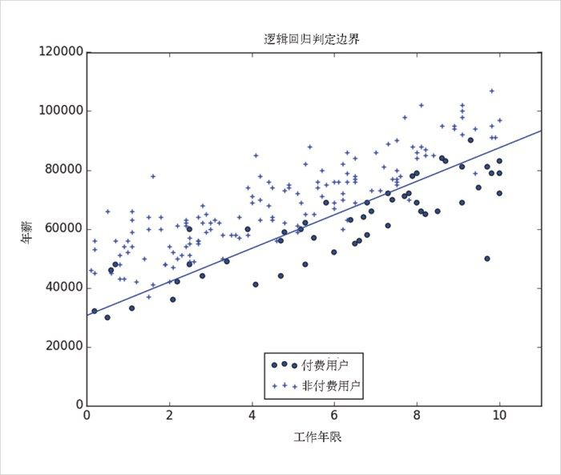
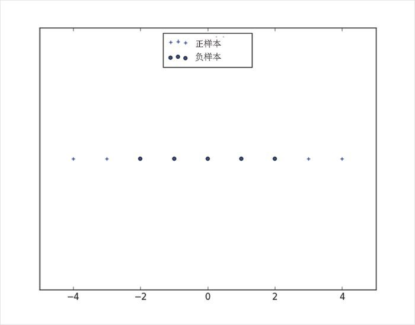
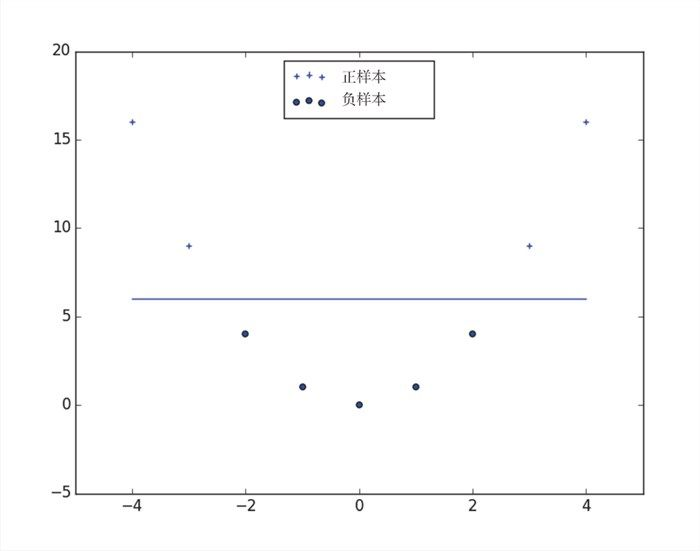

16.5 支持向量机
Dot(beta_hat, x_i) 等于 0 的点就是我们的分类边界线，具体如图 16-5 所示。

图 16-5：付费用户和非付费用户的判定边界
这个边界实际上就是一个超平面 （hyperplane），将参数空间一分为二，一半对应着预测为付费用户 ，一半对应着预测为非付费用户 。我们发现，这个预测只是寻找最优逻辑模型过程中的一个副产品而已。
另外，还有一种分类方法，即寻找的超平面只要对训练数据的分类效果“最佳”即可。这实际上就是支持向量机 （support vector machine）思想，即寻找将距离每个类别中的最近点的距离最大化的超平面，如图 16-6 所示。
图 16-6：分类超平面
寻找这种超平面的过程就是一个最优化的过程，不过这里面所涉及的技术对我们来说太复杂了。另外一个不同的问题是，分类超平面也许根本就不存在。简单来说，就是在我们的“谁会付费？”的数据集中，没有能够把付费用户和非付费用户完美分隔的直线。
我们（有时）可以考虑把数据映射到一个更高维的空间中。例如，我们先看图 16-7 所示的一维数据集的情形。

图 16-7：无法分隔的一维空间数据集
很明显，没有一个超平面能够将这些正样本与负样本分隔开来。但是，如果通过把 x 替换为 (x, x**2) 来将数据集映射到一个二维空间，我们看一下情况会有什么变化。情况突然出现了转机：我们能够找出分隔数据的超平面了，如图 16-8 所示。

图 16-8：在更高维空间中数据变为可分隔的
这通常称为核方法 （kernel trick），因为不用真的把数据点映射到更高维的空间（如果数据数量较多并且映射复杂的话，这个过程的代价将会很大），相反，我们可以使用“核”函数来计算更高维空间中的点积，并用它们来找出超平面。
如果不借助于专业人士编写的专门的优化软件的话，我们会很难（并且也不一定是一个好主意）利用 支持向量机，因此，我们对它的介绍到此为止。